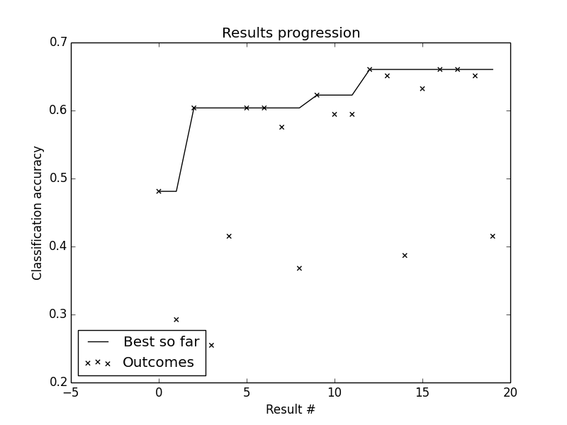
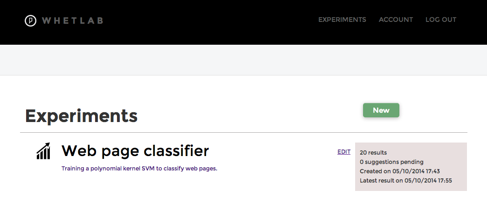
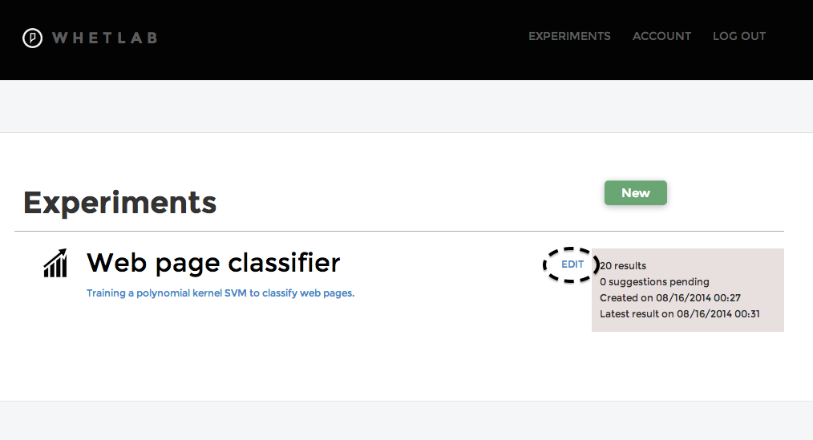

Tutorial: Sharpening your tools with Whetlab in Python¶
In this tutorial, we’ll describe the Python functionalities of Whetlab through a simple but important example application: the tuning of a machine learning algorithm.
Machine learning algorithms are becoming ubiquitous in advanced computing systems. Yet using them with success can require some know-how. Specifically, each learning algorithm requires the specification of hyper-parameters, which are knobs that greatly impact the performance. Tuning these knobs is thus a perfect problem for Whetlab to solve.
A scikit-learn example¶
For our example, we’ll use the great machine learning library scikit-learn library, which provides good implementations of the most commonly used learning algorithms.
Let’s assume that we’d like to develop a classifier that can automatically classify web pages according to the topic they discuss. The first step is then to obtain some training data for this problem. Luckily, scikit-learn provides us with simple functions for downloading data sets from the mldata.org repository. The reposity contains the Yahoo! Web Directory Topics, a data set of web pages [1] labeled with their Yahoo! directory topic (Arts, Business, etc.). There are 4 different topics in this data set, so a random guess would be correct only about 25% of the time.
The data set can be downloaded as follows:
from sklearn.datasets import fetch_mldata
data_set = fetch_mldata('yahoo-web-directory-topics')
In this case, data_set is a dictionary. It has a key 'data' associated with a sparse matrix whose rows are the web pages. It also has a key 'target' corresponding to a vector (Numpy 1D array) providing the class labels of all web pages.
The next step is to split this data set into training and validation sets. The data set contains a total of 1106 web pages, so we’ll use 1000 for training and the rest for searching over hyper-parameters:
train_set = (data_set['data'][:1000],data_set['target'][:1000])
validation_set = (data_set['data'][1000:],data_set['target'][1000:])
Setting up a Whetlab experiment¶
We now have to choose a learning algorithm to solve this classification problem. A popular choice is an SVM classifier, with a polynomial kernel. Its two most important hyper-parameters to tune are the regularization constant C and the degree of the polynomial kernel degree.
The experiment we want to perform with Whetlab is thus to properly tune these hyper-parameters. We’ll first write down this information into a dictionary, as follows:
parameters = { 'C':{'min':0.01, 'max':1000.0,'type':'float'},
'degree':{'min':1, 'max':5,'type':'integer'}}
In this dictionary, each key is a str corresponding to the name of a hyper-parameter. It is recommended to make it identical to the corresponding argument name that sciki-learn uses for it (we’ll see later why). Associated with each key, is a dictionary that provides information about the hyper-parameter.
As is probably obvious, the minimum and maximum values of the hyper-parameter are specified by the keys 'min' and 'max'. The key 'type' on the other hand specifies the type ('float', 'integer') of the hyper-parameter.
We also need to tell Whetlab what we will be optimizing. In this case, we want to maximize the validation set classification accuracy, which we specify as follows:
outcome = {'name':'Classification accuracy'}
Note that Whetlab always maximizes, so if we were interested in optimizing a measure of performance that decreases with the quality of the solution, then we would later provide the negative of these measured outcomes to Whetlab.
Moreover, we have to retrieve an access token from our Whetlab account. An access token works as a private key for using and accessing our personal Whetlab account. We can get an access token simply by logging into our account at api.whetlab.com/account. In what follows, we’ll assume that variable access_token has been set to the string of our retrieved access token.
Having obtained our access token and having setup our experiment’s parameters and outcome, we can finally create our Whetlab experiment, as follows:
import whetlab
scientist = whetlab.Experiment(access_token=access_token,
name="Web page classifier",
description="Training a polynomial kernel SVM to classify web pages.",
parameters=parameters,
outcome=outcome)
Here, we decided to name our experiment “Web page classifier” and gave it a short description reflecting what it is trying to achieve.
It is important to note that Whetlab will not allow to have multiple experiments with the same name. While this is good practice anyways, it is also important for supporting the possibility of resuming previously run experiments (see section Resuming experiments).
Running the experiment¶
We are now ready to start experimenting. We can use scientist to suggest a first job to run:
job = scientist.suggest()
Here, job is a dictionary, whose keys are the names of the hyper-parameters and the associated values are suggested values to test:
>>> print job
{u'C': 750.0025, u'degree': 2}
We can now instantiate a scikit-learn SVM object and train it on our training set:
from sklearn import svm
learner = svm.SVC(kernel='poly',**job)
learner.fit(*train_set)
Notice that, since we have used names that match the arguments of the constructor of the scikit-learn SVM object, we can unpack the dictionary job as arguments to the constructor by prefixing it with **.
Once the SVM is trained, we can evaluate its performance on the validation set and inform Whetlab of the outcome, using the method update of scientist:
accuracy = learner.score(*validation_set)
scientist.update(job,accuracy)
Thanks to this information, Whetlab will be able to suggest another promising job to run. Hence, with a simple for loop, the process of tuning the SVM for, say, 19 more iterations becomes:
n_iterations = 19
for i in range(n_iterations):
job = scientist.suggest()
learner = svm.SVC(kernel='poly',**job)
learner.fit(*train_set)
accuracy = learner.score(*validation_set)
scientist.update(job,accuracy)
Once we’re done tuning, we can simply ask scientist to provide us with the best hyper-paramters found so far as follows:
best_job = scientist.best()
These are the hyper-parameter values we should be using to train our final SVM classifier [2].
Viewing experiments¶
We might want to visualize all the different hyper-parameters evaluated in the experiment, with their associated results.
This can be done within Python as follows:
scientist.report()
The method report() generates two figures. One showing a table with all the hyper-parameters and associated outcomes, organized in top-down chronological order, that will look something like this:

From this table, we immediately observe that Whetlab has figured out quickly that a linear classifier (polynomial degree of 1) is optimal for this problem.
The second figure is a plot showing on the x-axis the index of the results and on the y-axis the value of the associated outcome. The figure also include a curve corresponding to the best outcome achieved thus far:
{kind=link}
Another option for consulting the history of an experiment is to visit the Whetlab webiste. All experiments conducted by a Whetlab user are listed there, under the EXPERIMENTS tab:
{kind=link}
For instance, by clicking on our “Web page classifier” experiment, we can view it in a convenient table format:

Note that these results can straightforwardly be copy-pasted into a spreadsheet (such as a Google Docs spreadsheet) and further be analyzed and manipulated.
Resuming experiments¶
An experiment can also be resumed after it is interrupted, based on its name. When creating the experiment, if the name matches that of a previously run experiment, the information associated with that experiment in our Whetlab account will be fetched into the initial state of our scientist.
In our case, we could resume from the 20 iterations of hyper-parameter optimization already performed in the previous section as follows:
scientist = whetlab.Experiment(access_token=access_token,
name="Web page classifier")
Notice that it is not necessary to specify the description, parameters and outcome arguments in this case. In fact, as soon as the name is matched with a previous experiment, these arguments are simply ignored.
It is thus very important to use different names for the different experiments we decide to perform with Whetlab. Otherwise, we could be trying to create a new experiment, but accidently be resuming an old one.
As a fail-safe, we can also set the resume argument to False, to guarantee that an old experiment will not be resumed. In the case where a matching previous experiment would be found, an exception will be raised.
Adding our own results to an experiment¶
We have seen how to update an experiment with the result of a suggested job. However, nothing prevents us from updating the experiment with the result of a job that we chose ourselves.
This can be convenient in situations where we have already run many jobs manually and wish to start using Whetlab from there, or if we already have a good idea of reasonable jobs to test and want Whetlab to benefit from that information.
For example, imagine we have already evaluated the SVM’s performance for a value of 50 for hyper-parameter C and a value of 1 for degree, for which the validation set accuracy is 0.61320754717. We than simply update our experiment as follows:
job = {'C': 50.0, 'degree':1 }
accuracy = 0.61320754717
scientist.update(job,accuracy)
It is also possible to remove a (for example, erroneous) result from an experiment using the cancel() method, as follows:
scientist.cancel(job)
Deleting an experiment¶
As for deleting a whole experiment, this is accomplished from the Whetlab website, by clicking on EDIT:
{kind=link}
then scrolling down and clicking on DELETE:

In our example, the “Web page classifier” experiment would then no longer show up in our list of experiments.
Whetlab configuration file¶
When creating or deleting experiments, each time we had to explicitly provide an access token. An alternative and often more convenient way of specifying our access token is through a Whetlab configuration file.
Either in our current directory or in our home directory (Whetlab will search for it in that order), we can simply create a .whetlab text file containing the following lines:
[whetlab]
access_token=THIS_IS_MY_ACCESS_TOKEN
where THIS_IS_MY_ACCESS_TOKEN would be our access token. This would allow us to more easily share our Python code that uses Whetlab with other Whetlab users who have their own account.
Footnotes
| [1] | This data set is actually quite small for building a good classifier, it’ll do for our purposes. |
| [2] | Simple trick to obtain better results: once you’ve finished experimenting and have finalized your choice of values for the hyper-parameters, train a final SVM classifier on all the data, i.e. the concatenation of the training and validation sets data. |